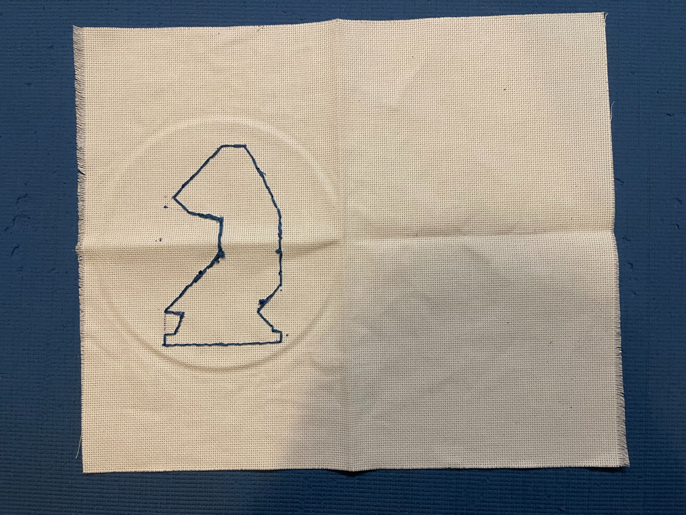

Exhibition of Wonder - Bag with Embroidery
Day 1

On the first work day, I started out the first two blocks by affixing my embroidery hoop and drawing my own design on a scrap piece of paper, then tracing it onto the fabric. For the second two blocks, I embroidered the design on the fabric, finishing faster than originally planned and experiencing no challenges. Therefore, I updated my plan to include the embroidering of the opposite side of the bag, to be done on day 2, and to fill in the two knights.
[Previous Day]
[Back to Hub]
[Next Day]